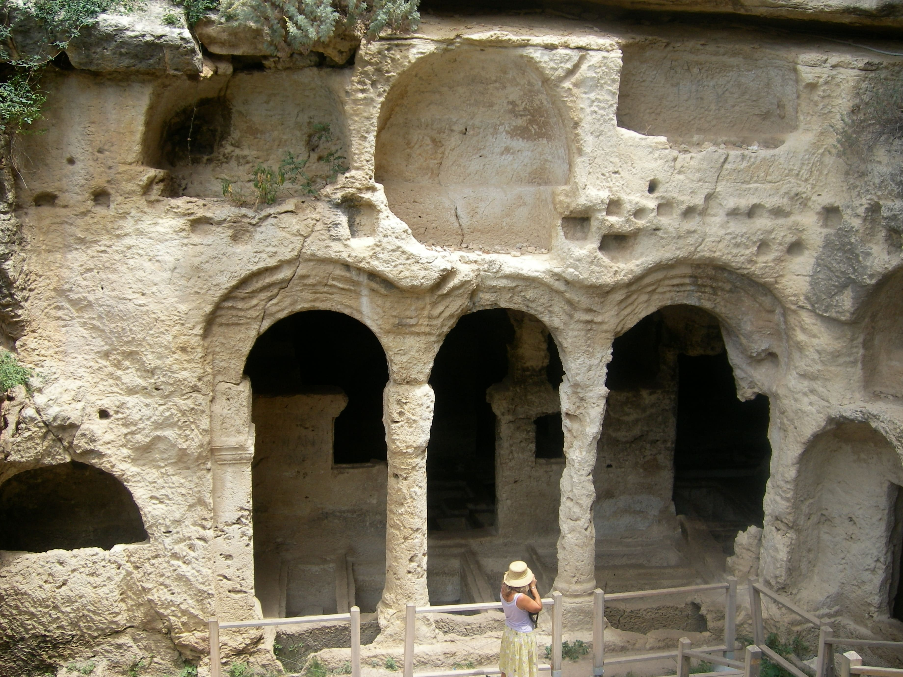
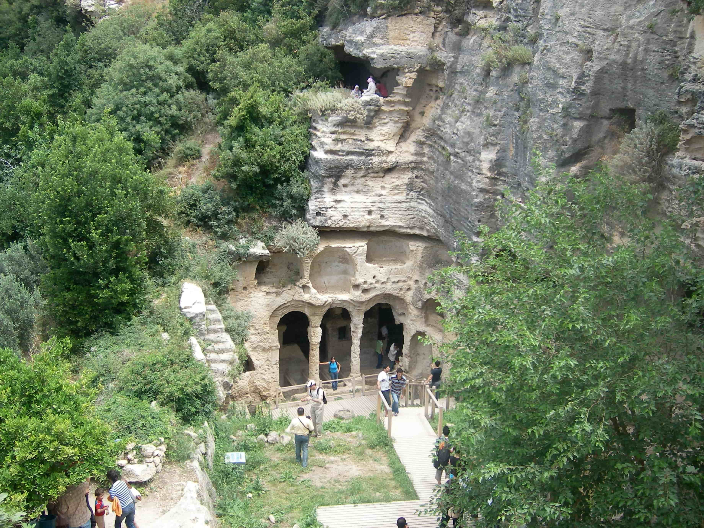

Samandağ,
Türkiye'nin güneyinde, Hatay ilinin ilçelerinden biri.
Coğrafya
Samandağ; Musa Dağı, Keldağ ve Saman Dağı arasında bulunan, Asi Nehri'nin Akdeniz'e döküldüğü noktada oluşmuş deltada kuruludur. 446 km²'lik yüzölçümüne sahip ilçede bağlı belediye sayısı 12, köy sayısı 31'dir.
Tarih
MÖ VII. yüzyılda Yunanlar(İyonyalılar),Asi Nehri 'nin döküldüğü bölgede Al Mina Limanını kurmuşlardır. Bu sayede gemiler, Asi nehrini ulaşım ve ticaret yolu olarak kullanmış, sonradan başkent olacak Antakya'nın bir metropol olmasına büyük katkıda bulunmuşlardır. Al Mina limanı, önemini uzun yıllar korumuştur. MÖ 300 yılında Büyük İskender'in ünlü generali, I. Selevkos Nikator tarafından kurulan Selevkos İmparatorluğu'na başkentlik yapmak üzere bir liman şehri olan Seleucia Pierria (bugünkü adıyla Çevlik) kurulmuştur. Ancak I. Selevkos Nikator, deniz tarafından sürekli artan saldırılar sebebiyle Antioch(Antakya) şehrini kurmuş ve imparatorluğun başkentini oraya taşımak zorunda kalmıştır.
Roma İmparatorluğu döneminde imparator Vespasianus, limanı sel sularından korumak üzere dağlarda tüneller yaptırmıştır. Yapımı toplamda yaklaşık yüz yıla yakın bir zaman boyunca sürdüğü tahmin edilen tüneller, oğlu Titus tarafından tamamlanmıştır. XIV. yy'a kadar Selçuklu, Fatımiler ve Memlük egemenlikleri altında kalan Samandağ, 1516'da Osmanlı hakimiyetine geçmiş ve adı Süveydiye olarak anılmaya başlanmıştır. Samandağ, I.Dünya Savaşından sonra bir müddet Fransızların idaresindeki İskenderun Sancağı sınırları içerisinde kalmıştır. Hatay Devleti'nin kurulmasıyla nahiye statüsüne kavuşan Samandağ, 23 Temmuz 1939'da Referandumla Hatay'ın Türkiye'ye ilhakıyla Türkiye Cumhuriyeti'ne bağlı bir nahiye olmuş, 1948'de Süveydiye adı Samandağ olarak değiştirilerek Hatay iline bağlı bir ilçe olmuştur.
Etnik Yapı ve Din
Samandağ etnik olarak Arapların, Ermenilerin ve Türkmenlerin yaşadığı bir bölge olmakla beraber Araplar çoğunluğu oluşturur. Dinsel ve mezhepsel olarak ise Nusayri (Arap Alevisi) başta olmak üzere Sünni, Hristiyan Ortodoks, Hristiyan Katolikler ve Gregoryenler gibi çeşitli inanç grupları bulunmaktadır. Samandağ'daki Arapların büyük bir kısmı mezhepsel olarak Nusayridir. Arapların içinde önemli bir nüfusta Hristiyan Ortodoks ve Protestan Araplar da mevcuttur. Bunun yanında çok az sayıda da olsa Türkmen ve Türk aileler de bulunur. Ayrıca bölgede bulunan her inançtan insanlar dindar olup dinlerine bağlıdırlar.
Samandağ halkı aynı coğrafya olan ancak 1920'lerde sınır çizilirken ikiye bölünen ve bir kısmı Türkiye'de bir kısımı ise Suriye'de kalan sınır bölgeleriyle akrabalıkları mevcuttur. Samandağ'da herkes birbirinin milliyetine ve dinine büyük saygı gösterir. Dünyada Ermenistan dışındaki tek Ermeni mahallesi, Samandağ'a bağlı olan Vakıflı'dır.
Diller dillere, çan sesleri ezan sesine, bayramlar bayramlara karışır; en çok bayram burada kutlanır. Ramazan ve Kurban Bayramlarının, Noel ve Meryem Ana Yortularının, Gadir Hum Bayramlarının sevincine tüm Samandağlılar katılır. Komşular birbirlerine "Allah herkese kendi dininde yardımcı olsun" derler. Samandağ'da 350 Arap Ortodoks ailenin yaşadığı Cemal Gürsel(Zeytuniya) Mahallesi'nde birbirine yakın mesafede iki Arap Ortodoks Kilisesi var. 12.yy yapısı kiliselerden Aziz İlyas Kilisesi demir parmaklıklarla çevrilmiş bir avlunun, Meryem Ana Kilisesi ise Ortodoks Mezarlığı'nın içinde. Her ikisi de son derece bakımlı ve ibadete açık.
Seleucia Pieria'nın Şehir Yapısı
 
Seleucia Pieria'nın şehir yapısı konumu nedeniyle iki bölümden oluşuyordu. Yukarı şehir ve aşağı şehir olarak adlandırılan bu bölümler şehrin kurulduğu bölgedeki arazi yapısı bunu mecburi kılıyordu. Yukarı şehir dağın üst yamacında yer alıyordu. (Bugün Kapısuyu mahallesinin bulunduğu bölge) Denizden yaklaşık 30 metre yüksekliğinde imalathaneler, mabetler ve resmi binalar burada kurulmuştu. Dağın güney-batı tarafında dik kayalıklar şehri aşağıdaki bölümden ayırıyordu. Aşağı şehirle buradaki bağlantıyı dik kayalıklara oyulmuş ve 7-8 kişinin yan yana yürüyebileceği muazzam merdivenler sağlıyordu. (Merdivenler hala sapasağlam durmaktadır ve görülebilecek durumdadır. Merdivenden biraz önce sol tarafta kayanın içine oyularak yapılan, bekçi odası olarak kullanılmış olması muhtemel bir mağara vardır. Burası daha sonra rahiplerin oturduğu yer olarak kullanılmıştır.) Aşağı şehir liman çevresinde kurulmuştu. Liman tesisleri yanında pazar, çarşı, dükkanlar ve zanaatkarlar burada bulunmaktadır. Aynı zamanda büyük bir hamam ve küçük bir tiyatro yer almaktadır. Burası şehrin en canlı en hareketli yeridir. İhracat ve ithalat merkezi olduğu için büyük depolar, ayrıca gemi onarımı için küçük bir tersane inşa edilmişti.
Teraslarda zemini mozaikle kaplı lüks Roma villaları yer alıyordu. Şehrin surları içinde yer alan liman bir boğaz ile denize bağlıydı.
Aşağı şehirle, yukarı şehir arasında bulunan kapı dahilen iki burçla dar bir geçidi ihtiva etmektedir. Bunu burcun kalan izlerinden anlamak mümkündür. Surun kalınlığı 4 metredir. Şehrin tamamı bir surla çevrilidir. Bu surun uzunluğu 12,5 km'yi bulur. Bu duvarlardan günümüze çok az bir kısmı kalmıştır. Bazı yerlerde kalıntı izleri durmasına rağmen duvarın büyük bölümünü oluşturan taşlar eski evlerde kullanıldığından bugün sadece izi kalmıştır. Uzaktan bakıldığında rahatlıkla sur izleri görülebilmektedir. Çevre duvarları içerisinde kalan liman 16 hektardır. (160 dönüm)
Şehrin 3 büyük kapısı vardır. En güneydeki kapı şehrin pazar kapısı olarak adlandırılmış, surların dibindeki kapı orta kapısı olarak kullanılmıştır. Bu kapı surların dibindeki kapı olarak Bab el- Kils (kireç kapısı) ve kral kapısı olarak bilindiğine dair görüşler vardır. Şehrin içinden geçen suyun surlardan çıktığı yerdeki kapıya Bab el-Mina (liman kapısı) denmektedir. Bu kapının pazar kapısı gibi şimdi yıkılmış olan iki büyük kulesi vardı. Biraz daha kuzeyde üçüncü bir kule inşa edilmiş ve şehrin iç tarafında uzun bir yapı savunma için yapılmıştır. Yukarı şehrin uzun duvarında yalnız bir kapı (Bab el-hava) yapılmıştır. El Kabusiye ( Kapısuyu ) mahallesine giden yol buradan başlamaktadır.
Kuzey-doğu şehir duvarından ayrılan çapraz şeklindeki duvar şehrin içine doğru kıvrılmış ve orada kesilmiştir. Şehir duvarı batıdaki suya kadar gelir, öbür uçtan devam edip limana kadar ulaşır ve orada son bulur. Bu liman şimdi Minat el- Atiga (eski liman) ve Minat el-Cedide (yeni liman) denilen yerden dış limana açılır. Kanal kuzeyde kalenin duvarları, güneyde liman duvarlarıyla korunmuştur. Boğazın denize açılan yerinde iki bekçi evi yapılmıştır. Güneydeki bekçi evi kalenin içinde 3x12 metre büyüklüğünde bir oda şeklindedir. Limanın doğu tarafındaki eski liman, duvar izleriyle tespit edilmiştir. Limandan denize bir kanalın gittiği, kanalın etrafındaki sıra kulelerle tespit edilmiştir. Dış binanın genişliği 130-140 metre olarak saptanmıştır. Güneydeki iskele 100 metre uzunlukta 9 metre genişlikte olup yapısını kısmen koruyabilmiştir.
Nüfus
İlçe nüfusu 2020 TÜİK nüfus verilerine göre 124.237'dir.
Ekonomi
Günümüzde balıkçılık ve yoğun şekilde tarım yapılan bir ilçedir. Nüfusun belli bir bölümü geçimini yurtdışında(genellikle Arabistan) çalışan aile üyelerinden gelen para ile gelir sağlamaktadır. Akdeniz kıyısında, Çevlik mevkiinden başlayan güneye doğru uzanan kumsalı oldukça uzundur. Bu kumsalın uzunluğu yaklaşık 14 kilometredir. Dünyanın en uzun ikinci sahilidir.[19] İlçe, Antakya'ya ve Yayladağı'na asfalt yollarla bağlantılıdır. Samandağ kumsalları, nesli tehlikede olan Chelonia mydas (yeşil kaplumbağa) ve koruma altına alınmış Caretta caretta (iribaş kaplumbağa) türü deniz kaplumbağalarının önemli yumurtlama-üreme alanlarından biridir. Ayrıca bu kumsallar Hayalet Yengeçleri [20] popülasyonuna ev sahipliği yapar
Narenciye,mandalina ve portakal,zeytin üretimi yapılır. İlçede 30 eczane iki sağlık ocağı 1 devlet hastanesi vardır. Denize sıfır olmasına ve dünyanın en uzun sahillerinden birine sahip olmasına rağmen turizm yatırımı henüz yapılmamıştır. Ayrıca denizi yazın rüzgarlı olduğu için sörf sporu için idealdir.
Yerel Yönetim
Belediye
Samandağ'da belediye teşkilatı ilk kez 1937 yılında kurulmuştur.
217351015
Iskenderun Teknik Universitesi